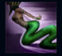
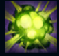
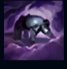
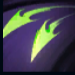
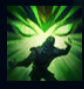

Cassiopeia
| Cassiopeia The Serpent's Imbrace | |
|---|---|
| Release date | 14.12.2010 |
| Class | Battlemage |
| Positions | Mid, Top |
| Resource | Mana |
| Range type | Ranged |
| Adaptive type | Magic |
| Base statistics | |||
| Health | 560 – 2090 | Mana | 350 – 1370 |
| Health regen. | 5.5 – 14 |
Mana regen. | 8 – 21.6 |
| Armor | 18 – 77.5 | Attack damage | 53 – 104 |
| Magic resist. | 32 – 40.5 | Crit. damage | 175% |
| Move. speed | 328 | Attack range | 550 |
Cassiopeia este o creatură letală care îi manipulează pe cei din jur după propria voință. Era cea mai tânără și mai frumoasă fiică a familiei nobile Du Couteau din Noxus, dar s-a aventurat adânc în criptele de sub deșertul Shurimei în căutarea puterii antice. Acolo, a fost mușcată de un gardian teribil al mormintelor, iar veninul lui a transformat-o într-un prădător cu instincte și înfățișare de viperă. Șireată și agilă, Cassiopeia se furișează sub ascunzișul nopții, împietrindu-și inamicii din priviri. |  |
ELEGANȚA ȘERPILOR Cassiopeia primește viteză de mișcare la fiecare nivel, dar nu poate cumpăra cizme. |
||
|---|---|---|---|---|
 |
EXPLOZIE OTRĂVITOARE După o perioadă de pregătire, Cassiopeia aruncă otravă într-o zonă. Dacă abilitatea lovește un campion inamic, Cassiopeia primește un bonus la viteza de mișcare. |
|||
 |
MIASMĂ Cassiopeia proiectează nori de otravă care încetinesc și pironesc inamicii care trec prin ei, provocându-le și daune scăzute. Inamicii pironiți nu pot folosi abilități de mișcare. |
|||
|  |
COLȚI GEMENI Cassiopeia dezlănțuie un atac care provoacă daune amplificate împotriva țintelor otrăvite și o vindecă cu o parte din valoarea daunelor efectuate. Dacă atacul ucide ținta, Cassiopeia își reface o parte din mană. |
|||
 |
PRIVIRE PIETRIFICATOARE Cassiopeia lansează un vârtej de energie magică din ochi, amețind toți inamicii aflați în fața ei care sunt întorși spre ea și încetinindu-i pe cei care sunt cu spatele. |